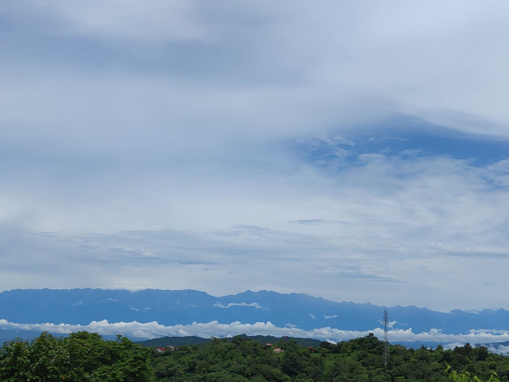
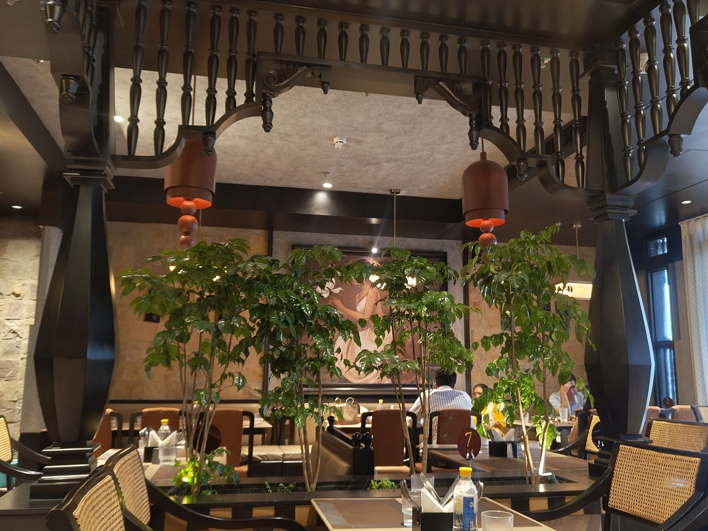
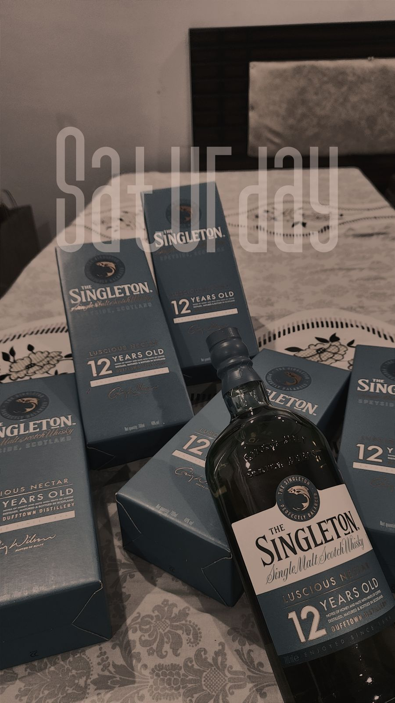
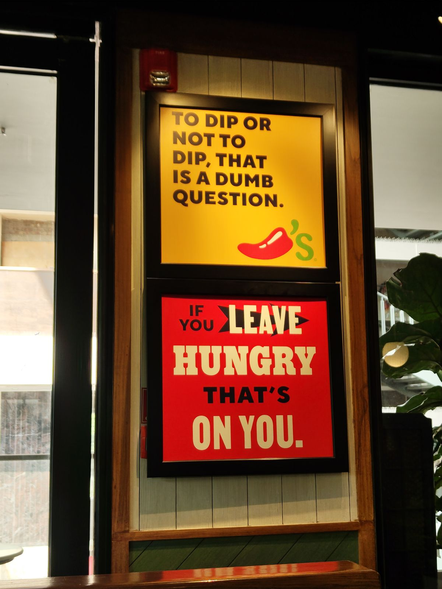
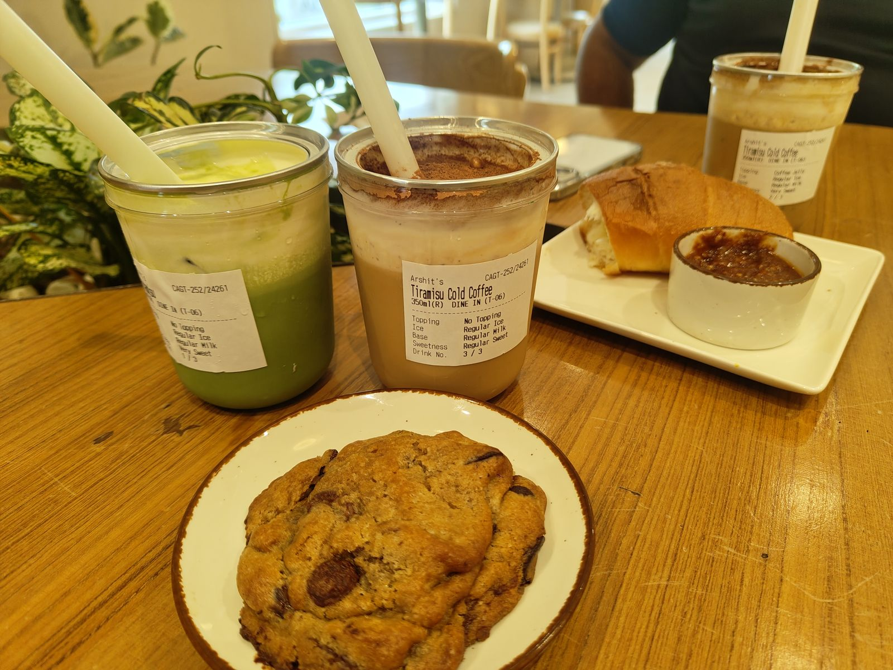
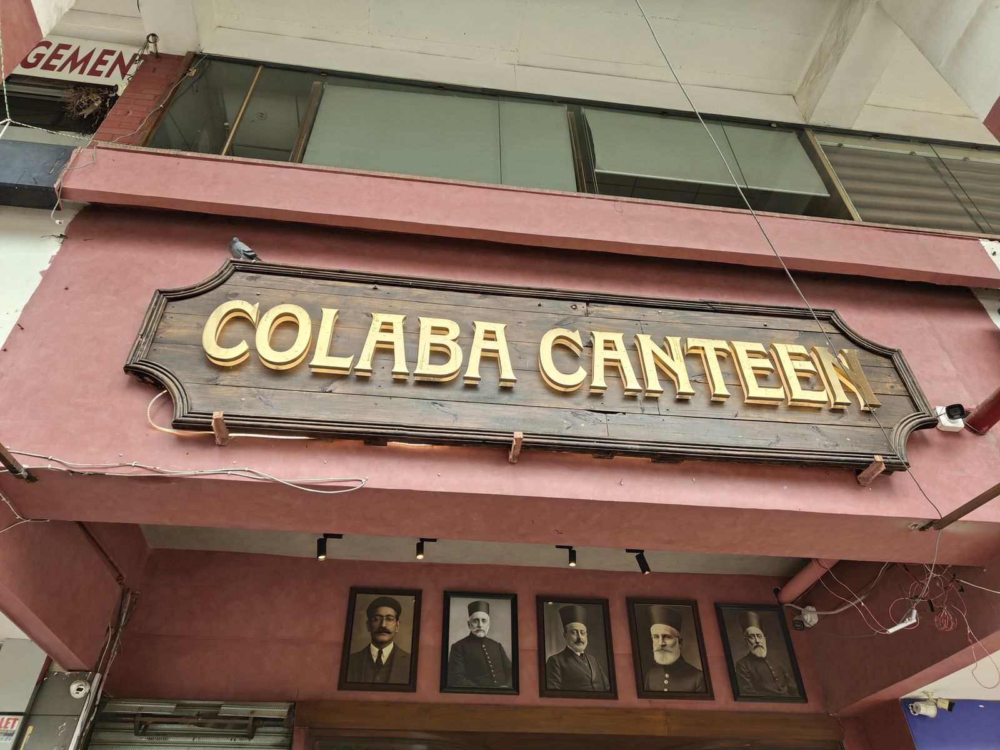
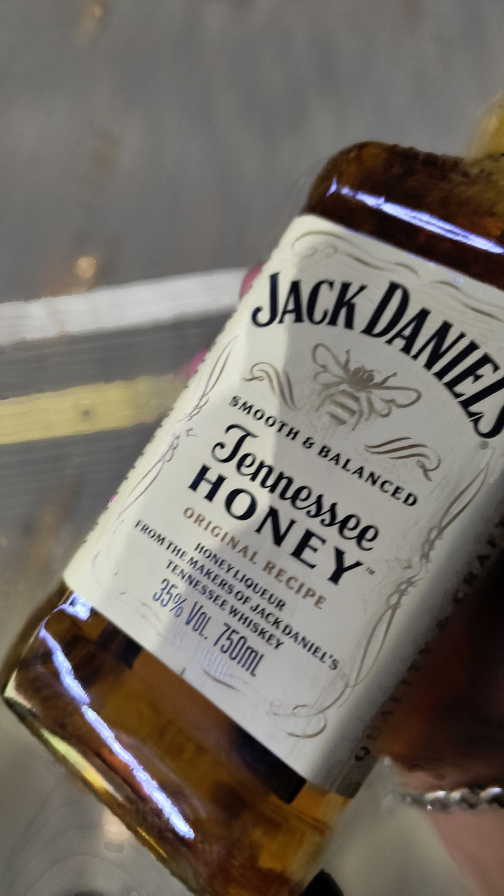
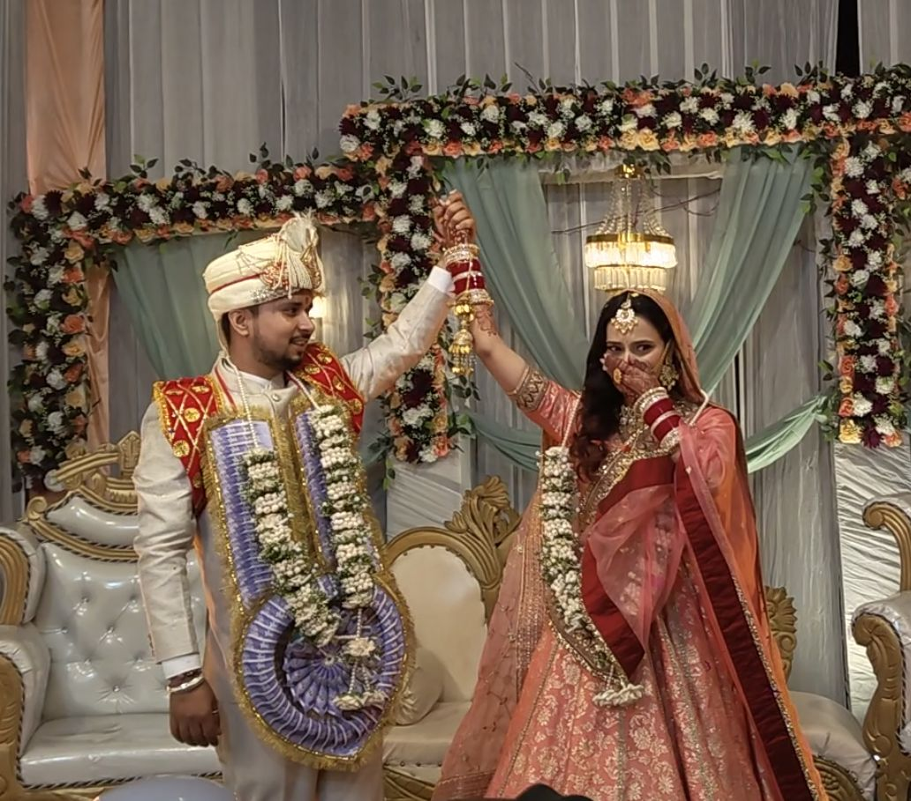

17 to 23 August 2026Who turned up, and who did not
PUBLISHED 29 AUGUST 2026
Monday I was a zombie. Delhi had emptied me out and Monday is reports day, so I sat there being useless at speed until it hit me that the coming weekend I had to be in Chandigarh, because it was Aman's bachelor party.
So I started ringing round to find out who was ditching.
Gagan was obvious. He is in Mumbai now. Gaurav could not make it either, something important lined up. At this point you are entitled to think Gaurav is a skipper, and I refer you to last week's note for the evidence.
Party still happening. Hadesh and I moved to planning.
Tuesday I woke up late and did nothing worth reporting, except that I read a friend's blog and then opened my notes app and wrote down that I should make one about food. That is all it was that day. A line in a notes app. I decided to leave it alone until after the weekend. I also finished the volume of Shadow Slave I had been on.
Wednesday I decided I would wake up early and work out. Deciding and doing turn out to be different activities. I cannot wake up. Something is broken.
Work, some New Girl, mostly Shadow Slave, new volume, slow start. My manager gave me something, I finished it early and submitted it late, and boys, that is the whole of corporate life.

Thursday I woke up late again, so at least one streak is intact, even if it is not a healthy one. Thursdays are low stress so I played some games and watched some episodes. Some brainstorming about the party and the bnb, then the planning slid to Friday. I did not bother with an alarm, because I knew any early morning I managed would be cancelled out by the weekend anyway.
Hadesh was in Mohali by then and had begun working on me to come Friday instead of Saturday. I would have gone. One of my team members was off and my manager had said he would be on and off, so somebody had to cover, and that somebody was me.
Friday I was up at ten, which for me is early. Bath, breakfast, shift. We kept planning and got the bnb booked, and all the while Hadesh, that manipulating son of a bitch, would not let the Friday thing go.
I said no. Repeatedly.
By eight I had said yes, and agreed to be on a nine o'clock bus.
My mum broke the spell by asking what exactly I planned to do arriving in Mohali at midnight. Sleep?
So I found some willpower, told Hadesh to wait until morning, and said I would take the six o'clock bus and be there by nine. Then I went to bed at eleven like a responsible adult.
Gagan video called at half twelve. Hadesh joined. Then Bansal, our friend from Belgium. That is his surname. I will not tell you his first name even if you paid me, because nobody has used it in years and soon he will be Bansal Bansal. The call went until twenty to three.
Gagan, that fucker, should be put on trial for causing my sleep deprivation.
Saturday
The 5:45 bus
Alexa got me up at twenty to five and my body did not come with me. Bath, laptop packed, out of the house, and by quarter to six I was on a bus to Chandigarh.
Somewhere on the way I thought to check BlaBlaCar out of Una, and there was one. So I got off at Una and had a bread pakora and a can of Coke Zero while I waited. I am not scoring a bus stand bread pakora. It was a bread pakora. It did its job.
The ride turned up and we made small talk, and he had his own music on, songs I had never heard in my life. Then he asked if I wanted to join his Jam and put some of mine in the queue.
A stranger handing me the aux in his own car, twenty minutes after meeting me. That is the whole argument for Spotify in one sentence.
He knew what I was planning
I spent the entire ride to Mohali enjoying the thought of Hadesh asleep after that call, and me arriving to wake him up.
He was up. Dressed. Ready.
Here is why. The four of us have our live locations permanently shared on Google Maps. Hadesh watched me move across the map, noticed I had not called him on the way, correctly worked out exactly what I was planning, and was standing by the door when I got there.
Mustard Madras
I rested a bit at his place first, then we took a cab to HLP Galleria, arguing the whole way about where to eat and landing on Mustard Madras for a proper South Indian breakfast.

We got there about half ten and the menu had a breakfast buffet until eleven at three hundred rupees, which was too good to walk past.
Masala dosa, uttapam, idli, vada, buttermilk. Hadesh had the same but took a filter coffee instead of the buttermilk.
I have not scored this place and I will not, because I am not rating a restaurant on a buffet. That is not the same meal as the one on the menu. But for three hundred rupees it is worth your time.
Ice cream from the McDonald's downstairs afterwards, obviously.
The hardest decision in Tricity
By quarter past twelve we were at the next essential stop.

Whiskey.
I am not joking when I say choosing the bottle was the toughest call I made all weekend. Strong field. The Labels, Black and Gold. Jameson. JD.
Singleton took it.
Nikhil
Back at Hadesh's to wait for Nikhil, which means I have now named every one of my best friends from college and the flat: Hadesh, Gaurav, Gagan, Aman who is the groom, and Nikhil.
I had not seen Nikhil since Gaurav's birthday in March, so there was a backlog, and we cleared it.
Then the three of us went for a late lunch at Chili's, the one next to Oven Fresh. Both are already reviewed so I will spare you.

Afterwards we wanted coffee, or matcha, or both. Blue Tokai in the same complex was rammed and had no matcha, which Nikhil wanted, so we drove three or four kilometres to Got Tea.

Got Tea is good. Properly good. They deserve a real write-up rather than a sentence in a weekly note, so I am going to give them one.
We sat there arguing about electricity costs in Punjab versus Himachal, as you do, and then it was time to go.
The part I am not writing
Whiskey into Nikhil's car, and we drove out to the bnb. Somewhere on that drive we started filming a vlog, Yes guys, I vlog. Snapchat, arshit_sharmaa. The kind of vlog that goes out to about 20-25 people and comes back with two replies, and that vlog becomes relevant tomorrow.
We were there by six. Ordered the essentials. Aman arrived around nine, which is a bold move from the centre of attention.
What happens at a bachelor party stays at a bachelor party. There are no photographs of Aman in this note because we did not take any, and the footage that does exist is not going on the internet.
Dinner afterwards at Harjinder Dhaba on the Kharar Dharamshala road, which is where we always eat after drinking. Always.
Bed at five.
Sunday
The groom's phone
Aman's phone started going at seven, because the groom does not get a lie-in.
He got until eight, then had to go. I got up to see him off, and then woke Hadesh, because I was not going to be the only one suffering.
Nikhil went home around the same time. Thinking about it now, that bastard left while I was asleep and did not say goodbye.
We rolled around in bed for a while, then cleaned the bnb, because that matters, guys.
The salon, and a correction
By half ten we were in a cab back to Hadesh's, working out where to eat. Showered, brushed, and out to the salon, because we both badly needed grooming.
While I was in the chair my cousin rang. He was in Kharar. I told him I would call him back.
Then we had gol gappe in Sector 32 and after that we went to Colaba Canteen.
Wait. I have mixed that up. The gol gappe were around the salon, not after it, and Colaba came later.
I am leaving that in. This is what a note written a week late looks like.

Colaba Canteen. The joke is on us. Also already reviewed.
The invitation
Coming out of Colaba I rang my cousin back, and it turned out he had watched the vlog from the car the night before.
He told me to come over. Or rather to come to my bhabhi's place, since his own place is in Baddi, and my bhabhi was very clear about whose house it was.
I thought about it and said yes. I had been meaning to visit them for a long time.
I told Hadesh, and I am confident he said go. He now denies ever saying it. We will never know.
So I packed up and left around three, with a faintly salty Hadesh in the rearview. Picked up something from Frutallo on the way. Reached the location bhaiya had sent me at quarter to four, and discovered it was five hundred metres from where they actually live.
Some phone calls and a live location later, I got there.
Bhabhi's place
Inside were bhaiya, bhabhi, and bhabhi's sister Nandni.
People should list everyone who will be at a thing when they invite you to it. Some of us like to prepare.
For the first hour I ignored Nandni's existence entirely, because my situational introversion arrived before I did, and I caught up with bhabhi and bhaiya instead.
Once we had run out of obvious topics and I managed to start up a conversation with Nandni, we started planning the evening. I pitched bowling.
Bowling was scrapped.
That is three. Ambience, Vegas Mall, and now this. I am no longer sure the problem is the venues.
The decision instead was Chandigarh, and a bottle of whiskey, so I was fine with it.
We stopped near Chandigarh University first to pick something up, or drop something off, I genuinely do not remember. Crossing the university brought some things back. Good, bad, happy, sad. Not today. Another time.

Undercover
By half eight we had started, and I will tell you now that JD Honey is a nice whiskey.
Somewhere between arriving and here I was back to my usual self. The four of us played a game called Undercover that Gagan taught me, and all four of us were properly into it initially. Later bhaiya kept on idk trying to lose on purpose or something and Gopika bhabhi was busy spilling the glass of whiskey. So I guess that leaves Nandni and me playing seriously however as usual I won.
I won every round.
This is my website so I decide who won hehe.
CBTL
Around half eleven somebody suggested Coffee Bean and Tea Leaf, I guess Gopika bhabhi, which was close by, so we went.
Blueberry muffin, cheesecake, and I think banana bread.
The food tasted stale to me, or had some aftertaste I did not like. I am also going to be honest with you: I was several hours into a bottle of JD Honey and had been awake since twenty to five the previous morning. My palate was not admissible evidence. So that is not a review, it is a report, and the report is unreliable.
The 1:55
Then a car ride with the music up, which was good.
Back at bhabhi's by one, and I did the maths. I had been running on borrowed energy for two days, if I slept then it would take me down properly, and Monday was Monday and I had to log in.
So I booked a bus. Cab at half one, on it by five to two.
They tried to stop me. Nobody stops me.
I made a collage of the weekend on the way and fell asleep. How I actually got home from there is a story on its own and it can wait until next week, because it is already Monday and I am trying to end this day by going to sleep in it.
The two Amans
This was Aman's week. His bachelor party, the last stretch before the thing itself.
And it ended at my cousin's house, and my cousin's name is also Aman.
Bhaiya and bhabhi were together for about ten years before they married, and they married about ten months ago. I have known about the two of them for most of that decade. When it finally happened I will not pretend I did not shed a tear or two.

So: two Amans. One who made the big promise ten months ago, in front of everybody, in a room full of flowers. And one who is about to.
And on the bachelor night, both of us far past sensible, I asked him whether he would still come to us once he was married.
He said yes.
Drunk, which is either the worst time to promise a thing or the only honest one.
I have spent this entire week finding out who turns up. Gagan could not, he is a thousand kilometres away. Gaurav could not, twice now. Nikhil left without saying goodbye. Hadesh spent four days manipulating me into arriving a day early and was standing at the door when I got there.
And Aman, with all of it about to change, told me he would keep coming.
I am writing it down so he cannot take it back.
Edits
30 August 2026. This first went up with Bansal as an unnamed friend of ours in Belgium. He then sent me a series of texts I am choosing to describe as threatening, so he has been upgraded to a surname. Hope that clears things up for everyone.
30 August 2026. Nikhil has informed me that he rang at seven in the morning and that I answered. I have no memory of this whatsoever, so I will take his word for it. It still does not count. He should have woken me up before he went.